<title>Shelf and Dial panel</title>
<meta name="viewport" content="width=device-width,initial-scale=1,viewport-fit=cover">
<!-- Round DB. The six ICPs in front of the shelf (proto/shelf/) and the
     circular Field (Wheel and Dial). Every picture is a real capture of
     proto/shelf/shelf.html with that persona loaded and their own story bank
     committed, taken by shoot.js. Every measured number is read off
     shots/facts.json and shots/reach.json. The reactions are simulated. -->
<style>
:root{color-scheme:dark;
 --bg:#0C0D12;--panel:#171A22;--panel-2:#20242E;--edge:rgba(255,255,255,.08);--edge-2:rgba(255,255,255,.15);
 --ink:#EFEDE8;--mid:#B8B4AC;--dim:#8F8B85;--accent:#7EB8D4;--gold:#DFCC7E;--root:#D6524C;--heart:#5FD5A6;
 --buy:#5FD5A6;--hold:#7EB8D4;--confuse:#C9A6F0;--resist:#E7A35A;--refuse:#E0625C;--r:14px;--r-s:10px}
@media (prefers-color-scheme:light){:root:not([data-theme="dark"]){color-scheme:light;
 --bg:#E9E8E3;--panel:#FFFFFF;--panel-2:#F3F3F1;--edge:rgba(20,22,28,.10);--edge-2:rgba(20,22,28,.20);
 --ink:#15171D;--mid:#45433E;--dim:#6B6862;--accent:#2F6E92;--gold:#8A7520;--root:#B23A34;--heart:#1E8A62;
 --buy:#1E8A62;--hold:#2F6E92;--confuse:#7446B0;--resist:#A45F12;--refuse:#B23A34}}
:root[data-theme="light"]{color-scheme:light;
 --bg:#E9E8E3;--panel:#FFFFFF;--panel-2:#F3F3F1;--edge:rgba(20,22,28,.10);--edge-2:rgba(20,22,28,.20);
 --ink:#15171D;--mid:#45433E;--dim:#6B6862;--accent:#2F6E92;--gold:#8A7520;--root:#B23A34;--heart:#1E8A62;
 --buy:#1E8A62;--hold:#2F6E92;--confuse:#7446B0;--resist:#A45F12;--refuse:#B23A34}
:root[data-theme="dark"]{color-scheme:dark}
*{box-sizing:border-box}
body{margin:0;background:var(--bg);color:var(--ink);font:16px/1.58 Inter,system-ui,-apple-system,"Segoe UI",Roboto,sans-serif}
main{max-width:1180px;margin:0 auto;padding-inline:16px;padding-block:40px 96px}
h1{font-size:34px;line-height:1.15;margin:0 0 10px;font-weight:650;text-wrap:balance}
h2{font-size:23px;line-height:1.25;margin:64px 0 12px;font-weight:620;text-wrap:balance}
h3{font-size:17px;margin:22px 0 6px;font-weight:600}
p,li{max-width:70ch;color:var(--mid)}
p b,li b,td b{color:var(--ink);font-weight:600}
.lede{font-size:18px;color:var(--ink);max-width:64ch}
a{color:var(--accent)}
a:focus-visible,button:focus-visible{outline:2px solid var(--accent);outline-offset:2px}
.num{font-variant-numeric:tabular-nums;white-space:nowrap}
.box{background:var(--panel);border:1px solid var(--edge);border-radius:var(--r);padding:18px 20px;margin:16px 0}
.box.warn{border-color:var(--gold)}
.box h3{margin-top:0}
.two{display:grid;grid-template-columns:1fr 1fr;gap:18px}
.two ul{margin:6px 0 0;padding-left:20px}
.finding{border-left:3px solid var(--root);padding:4px 0 4px 18px;margin:18px 0}
.finding p{margin:8px 0}
.kv{display:grid;grid-template-columns:120px 1fr;gap:6px 14px;margin:10px 0}
.kv dt{color:var(--dim);font-size:14px}
.kv dd{margin:0;color:var(--mid)}
.kv dd b{color:var(--ink)}
/* one persona */
.who{margin-top:72px;padding-top:26px;border-top:1px solid var(--edge-2)}
.who-hd{display:flex;flex-wrap:wrap;align-items:baseline;gap:6px 14px}
.who-hd h2{margin:0}
.role{color:var(--dim);font-size:15px}
.says{font-style:italic;color:var(--ink);margin:8px 0 4px}
.needs{font-size:15px}
.read{display:flex;flex-wrap:wrap;gap:8px;margin:12px 0 4px}
.chip{font-size:13px;padding:3px 10px;border-radius:20px;border:1px solid var(--edge-2);color:var(--mid);background:var(--panel)}
.chip b{color:var(--ink);font-weight:600}
.shots{display:grid;grid-template-columns:1fr 1fr 190px 190px;gap:10px;margin:16px 0}
figure{margin:0;background:var(--panel);border:1px solid var(--edge);border-radius:var(--r-s);padding:8px}
figure a{display:block}
figure img{width:100%;height:auto;display:block;border-radius:6px;background:#000}
figcaption{font-size:13px;color:var(--dim);margin:6px 2px 0;line-height:1.4}
figcaption b{color:var(--ink);font-weight:600}
.react{display:grid;grid-template-columns:1fr 1fr;gap:14px}
.react .box{margin:0}
.tag{display:inline-block;font-size:12px;font-weight:600;letter-spacing:.04em;padding:2px 9px;border-radius:20px;border:1px solid currentColor;margin-left:8px;vertical-align:2px}
.t-buy{color:var(--buy)}.t-hold{color:var(--hold)}.t-confuse{color:var(--confuse)}.t-resist{color:var(--resist)}.t-refuse{color:var(--refuse)}
.voice{color:var(--ink);margin:8px 0}
.voice::before{content:"\201C"}.voice::after{content:"\201D"}
.rests{font-size:14px;color:var(--dim);margin:10px 0 0}
.rests b{color:var(--mid)}
.wrap{overflow-x:auto}
table{border-collapse:collapse;width:100%;font-size:15px;margin:10px 0}
th,td{text-align:left;vertical-align:top;padding:9px 10px;border-top:1px solid var(--edge)}
th{color:var(--dim);font-weight:500;font-size:13px}
td{color:var(--mid)}
.bar{display:inline-block;height:8px;border-radius:4px;background:var(--accent);vertical-align:middle;margin-right:8px}
.bar.lo{background:var(--root)}
.q{background:var(--panel);border:1px solid var(--edge);border-radius:var(--r);padding:16px 18px;margin:14px 0}
.q p{margin:6px 0}
.q .shots{grid-template-columns:1fr 190px}
@media (max-width:900px){.shots{grid-template-columns:1fr 1fr}.react,.two{grid-template-columns:1fr}.q .shots{grid-template-columns:1fr 1fr}}
@media (max-width:520px){h1{font-size:28px}.kv{grid-template-columns:1fr}.shots{grid-template-columns:1fr}.q .shots{grid-template-columns:1fr}}
</style>

<main>
<h1>The shelf and the Dial, in front of the six</h1>
<p class="lede">He asked: "simulate this interface with the ICPs and the focus group, see what they say about the shelf and the circular design." Each of the six ICPs on file was loaded with their own stories and shown their own reading, on the shelf prototype and on the Field's Wheel and Dial, at a desk and on a phone. What follows is what each would say, the measurements it rests on, and the one finding that runs through all six.</p>

<div class="box warn">
<h3>Read this first. What a simulated panel is, and is not.</h3>
<div class="two">
<div><b>It can</b>
<ul>
<li>Hold the design against six different sets of stated needs at once, which a single reviewer cannot. Several findings below came from asking what a given person would see, and were then measured.</li>
<li>Name who in the audience a defect costs, so a fix has a reason attached.</li>
<li>Point measurement at the right place. Every number on this page was taken off the running prototype by <code>shoot.js</code> and <code>reach.js</code>. Those numbers are evidence. The words around them are not.</li>
</ul></div>
<div><b>It cannot</b>
<ul>
<li>Tell you what a real person feels. Every quotation here is written by one model reading six persona records. Nobody said any of it. Six voices, one author, one set of blind spots.</li>
<li>Tell you whether Angela would feel seen, whether anyone comes back tomorrow, or whether the circle feels like a loop. The project's own rule, CL22: "a simulated panel cannot answer whether something feels inspired."</li>
<li>Stand in for a sample. These are six constructed people with fixed stories. No percentages of a thousand person panel are given here on purpose, because they would be invented.</li>
<li>See motion or hover. The panel saw still captures of real presses.</li>
</ul></div>
</div>
<p style="margin-bottom:0">The tags (BUY, HOLD, CONFUSE, RESIST, REFUSE) are the house set from <code>RESEARCH-icp.md</code>. They are judgement, not a vote. The next real step is five people, twenty minutes each, on their own phone.</p>
</div>

<h2>The finding across all six</h2>
<div class="finding">
<p><b>On a phone, the shelf opens on whatever the finger lands on, and the heavier a person's charge, the less of it the finger can land on.</b></p>
<p><b>Cause.</b> Not the shelf. On the Wheel, a person's patterns are drawn as beads that sit where their charge is heaviest, and a bead answers a press before the address under it does. At 1,600 wide there is room around them. At 390 each address is about 20 pixels deep and the beads cover it. So the thing a person most needs to press is the thing most covered.</p>
<p><b>Measured</b> by <code>reach.js</code>, the product's own hit test over each ICP's heaviest address. A clear address reads 71%, not 100, because every segment shares its inner edge with the seat band.</p>
</div>
<div class="wrap"><table>
<tr><th>Heaviest address, pressable share of its own segment</th><th>At a desk, 1600</th><th>On a phone, 390</th><th>What the finger gets instead</th></tr>
<tr><td><b>Derek</b>, Manipulation Through Emotion, held 9.5</td><td class="num"><span class="bar" style="width:49px"></span>49%</td><td class="num"><span class="bar lo" style="width:2px"></span>0%</td><td>the Imposter pattern</td></tr>
<tr><td><b>Sofia</b>, Guilt Of Pleasure, held 3.1</td><td class="num"><span class="bar" style="width:53px"></span>53%</td><td class="num"><span class="bar lo" style="width:6px"></span>6%</td><td>the Judge pattern</td></tr>
<tr><td><b>Marcus</b>, Co-Dependency, held 4.3</td><td class="num"><span class="bar" style="width:53px"></span>53%</td><td class="num"><span class="bar lo" style="width:6px"></span>6%</td><td>the Diffuse Recoiler pattern</td></tr>
<tr><td><b>James</b>, Escapism, held 9.3</td><td class="num"><span class="bar" style="width:55px"></span>55%</td><td class="num"><span class="bar lo" style="width:10px"></span>10%</td><td>Root Mourner, Diffuse Freezer</td></tr>
<tr><td><b>Diane</b>, Anger, held 6.7</td><td class="num"><span class="bar" style="width:71px"></span>71%</td><td class="num"><span class="bar lo" style="width:20px"></span>20%</td><td>Manipulator, Controller</td></tr>
<tr><td><b>Angela</b>, Fear, held 3.1</td><td class="num"><span class="bar" style="width:71px"></span>71%</td><td class="num"><span class="bar lo" style="width:46px"></span>46%</td><td>the Negotiator pattern</td></tr>
</table></div>
<p>The Dial is worse on the same axis. Pressing each ICP's heaviest mark on the Dial opened the shelf every time, 12 of 12, but the ring that marks the pressed thing <b>came on 0 times of 12</b>. The shelf only knows how to ring a mark on the Wheel's canvas and on the Body figure. On a desk the Dial also fills the stage, so the open shelf covers its right third and whatever was pressed there (Diane, below). On a phone one of six Dial presses, aimed at the centre of James's Escapism bar, opened Addiction.</p>
<p><b>The move.</b> On a phone, a tap opens the shelf on a short list of everything under the finger, heaviest first, one row each. One extra tap, and it is never wrong. This is also the answer to CZ Q5, still open: "should a tap open the shelf instead of, or as well as, humming, given a finger cannot reliably pick one line there?" Then teach the shelf's ring to read the Dial's own hit list, and pan the Dial clear the way it already pans the Wheel. <b>Cost.</b> One new shelf state, and a second ring source. <b>Grade delta.</b> Heaviest address reachable on a phone: from a median of 8% of its segment to one tap for all six.</p>

<!-- ======================= SOFIA ======================= -->
<section class="who" id="sofia">
<div class="who-hd"><h2>Sofia</h2><span class="role">41, somatic practitioner. ICP.</span></div>
<p class="says">"I hold the room for everyone. I have not been held in four years and I would not know how to ask."</p>
<p class="needs">On file in <code>RESEARCH-icp.md</code>: takes it at eleven at night, on a phone, in bed. Wants "a map I could put in front of a client." Wants to know "who can ask for it and get it." "Tell me what to run and how long it takes."</p>
<div class="read"><span class="chip">Coherence <b>73</b>, band <b>Compounding</b></span><span class="chip"><b>52</b> addresses holding charge, none past 4</span><span class="chip">Heaviest <b>Guilt Of Pleasure</b>, Sacral, 3.1</span><span class="chip">5 stories committed</span></div>
<div class="shots">
<figure><a href="shots/sofia-2-shelf-1600.jpg">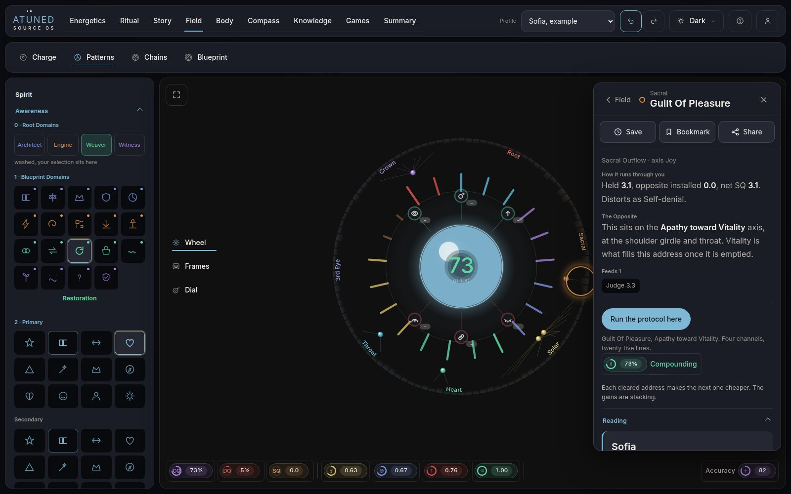</a><figcaption><b>Shelf, desk.</b> Her heaviest address pressed.</figcaption></figure>
<figure><a href="shots/sofia-3-dial-1600.jpg">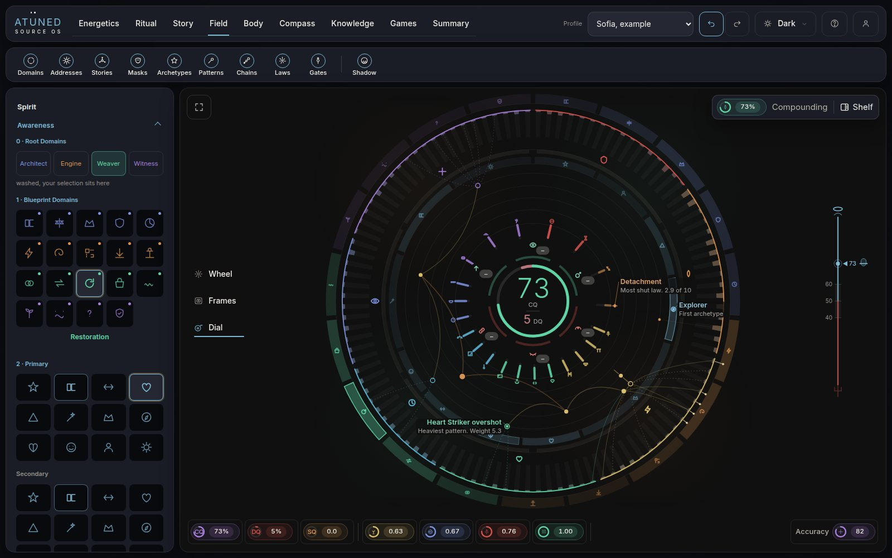</a><figcaption><b>Dial, desk.</b> Three names: Explorer, Heart Striker overshot, Detachment.</figcaption></figure>
<figure><a href="shots/sofia-2-shelf-390.jpg">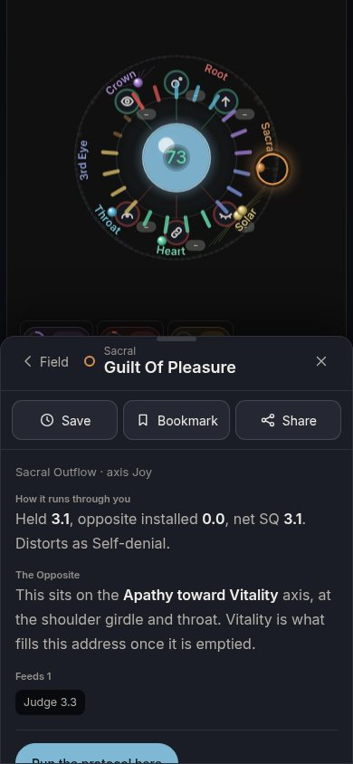</a><figcaption><b>Shelf, phone.</b></figcaption></figure>
<figure><a href="shots/sofia-3-dial-390.jpg">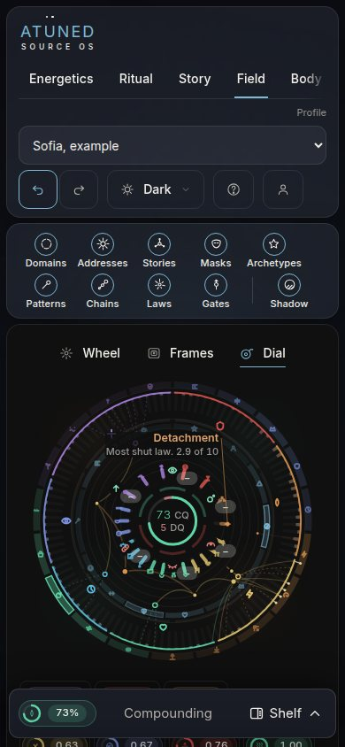</a><figcaption><b>Dial, phone.</b> One name.</figcaption></figure>
</div>
<div class="react">
<div class="box"><h3>The shelf<span class="tag t-hold">HOLD</span></h3>
<p class="voice">Finally the answer comes up where I tapped. That is the first time this has worked in bed. It tells me what to run, ‘four channels, twenty five lines,’ which is nearly the how long I asked for. Say minutes.</p>
<p class="voice">‘Who has sight: nobody.’ Good. That is the sentence I needed. But the button says send to your coach. I am the coach. Where is my side of it? I want to ask a client for their chain, not wait for them to find a button.</p>
<p class="voice">And it says my Guilt Of Pleasure sits in the sacral outflow, then two lines down it says the shoulder girdle and throat. I cannot put that in front of a client.</p>
<p class="rests"><b>Rests on:</b> answer on screen at 390, measured in DA. The share pane still says "Share with your coach" after DB widened sharing to any practitioner who can request. Her card names two places (below, found in passing). Her address is 6% pressable on a phone.</p></div>
<div class="box"><h3>The circular Field<span class="tag t-confuse">CONFUSE</span></h3>
<p class="voice">On my phone the Dial is a very beautiful knot. The one thing it names is ‘Detachment, most shut law, 2.9 of 10.’ That is a mark out of ten about a person, and I would never say it to a client that way.</p>
<p class="voice">For a client I would use the Wheel, or the Body page. The Dial is for me, at a desk, after the clinic.</p>
<p class="rests"><b>Rests on:</b> the Dial draws 10 labels at 390 for her, and 6 of them are the six empty gate pills showing a dash. The callout text is <code>'Most shut law. '+v+' of 10'</code> in <code>ui/rings.js</code>, a reading printed against a total, which the house rules forbid.</p></div>
</div>
</section>

<!-- ======================= DIANE ======================= -->
<section class="who" id="diane">
<div class="who-hd"><h2>Diane</h2><span class="role">46, founder, second company. ICP.</span></div>
<p class="says">"I work until the work is done and the work is never done. Rest feels like a moral failure."</p>
<p class="needs">On file: "A number and a cost. If it says I am at 41 I want the next line to say what the 41 is costing me this quarter." "What does it actually do at nine on a Tuesday." Wants to see what is left.</p>
<div class="read"><span class="chip">Coherence <b>59</b>, band <b>Even</b></span><span class="chip"><b>91</b> holding, <b>26</b> past 4</span><span class="chip">Heaviest <b>Anger</b>, Solar, 6.7</span><span class="chip">6 stories</span></div>
<div class="shots">
<figure><a href="shots/diane-2-shelf-1600.jpg">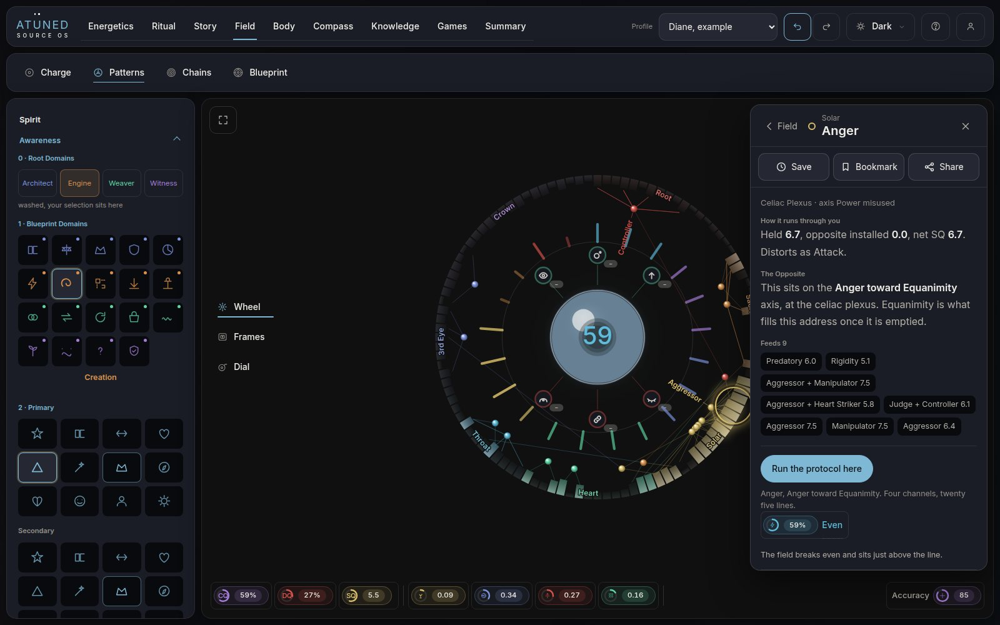</a><figcaption><b>Shelf, desk.</b> Anger, on the Wheel.</figcaption></figure>
<figure><a href="shots/diane-4-dialpress-1600.jpg">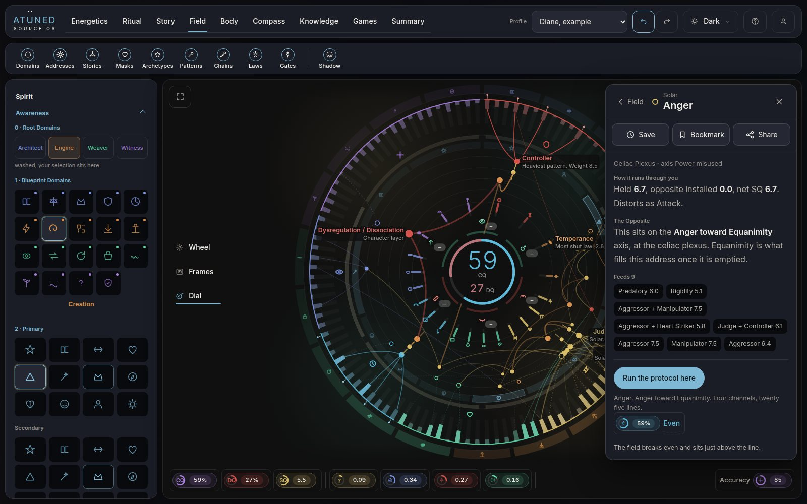</a><figcaption><b>Dial, desk, pressed.</b> The shelf covers the right third. Nothing is ringed. "Jud..." is cut at the edge.</figcaption></figure>
<figure><a href="shots/diane-2-shelf-390.jpg">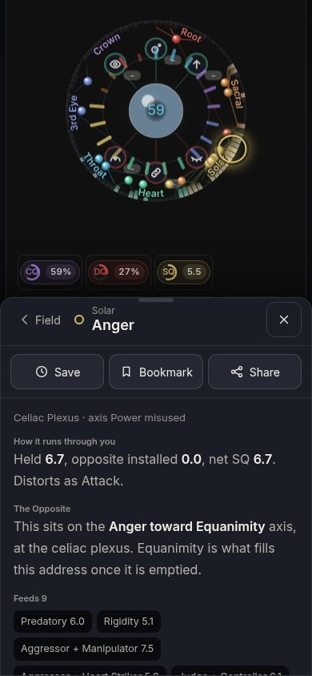</a><figcaption><b>Shelf, phone.</b></figcaption></figure>
<figure><a href="shots/diane-3-dial-390.jpg">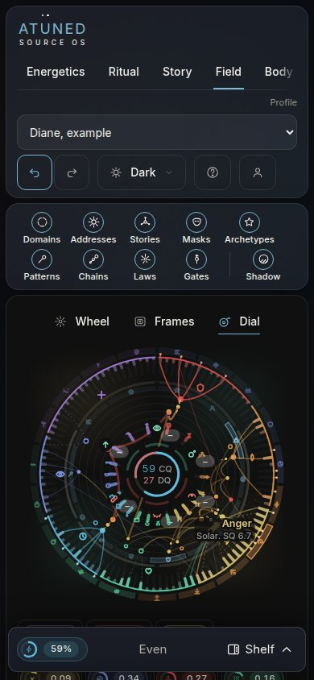</a><figcaption><b>Dial, phone.</b></figcaption></figure>
</div>
<div class="react">
<div class="box"><h3>The shelf<span class="tag t-hold">HOLD</span></h3>
<p class="voice">The good part: I press, it answers, the picture stays put. Save is the one I would use. Then against now, dated, is a progress report, and I will open it every Monday.</p>
<p class="voice">The part that loses me: ‘Held 6.7, opposite installed 0.0, net SQ 6.7.’ Three numbers and none of them is a cost. Then nine chips I will not read. I want one line: what holding this is taking from me.</p>
<p class="voice">Save and Bookmark are two buttons for what I would call one thing.</p>
<p class="rests"><b>Rests on:</b> her item card is 265 words and 55 numbers. The first desk screen of it shows 75 words. There is no cost line anywhere in it, the gap <code>RESEARCH-icp.md</code> section 3 already recorded for the result page.</p></div>
<div class="box"><h3>The circular Field<span class="tag t-buy">BUY</span></h3>
<p class="voice">At a desk the Dial is the one I would keep open. 59 and 27 in the middle, the band word, the heaviest things named round the edge. ‘The field breaks even and sits just above the line.’ I understand that sentence. It is a P and L.</p>
<p class="voice">But I pressed Anger and lost it. The panel came over it and nothing showed me which one I had.</p>
<p class="rests"><b>Rests on:</b> ring on the Dial 0 of 12 presses. The Dial does not pan clear of the shelf the way the Wheel does.</p></div>
</div>
</section>

<!-- ======================= MARCUS ======================= -->
<section class="who" id="marcus">
<div class="who-hd"><h2>Marcus</h2><span class="role">44, creative director. ICP.</span></div>
<p class="says">"I can see what is wrong with anything in four seconds. It has cost me two studios."</p>
<p class="needs">On file: "one screenshot of the instrument that is clearly not a template. If the wheel looks like a dashboard I have already closed the tab." "Give me a claim specific enough to be wrong." Read a named nerve as "precision as costume."</p>
<div class="read"><span class="chip">Coherence <b>62</b>, band <b>Gaining</b></span><span class="chip"><b>99</b> holding, <b>3</b> past 4</span><span class="chip">Heaviest <b>Co-Dependency</b>, Sacral, 4.3</span><span class="chip">5 stories</span></div>
<div class="shots">
<figure><a href="shots/marcus-2-shelf-1600.jpg">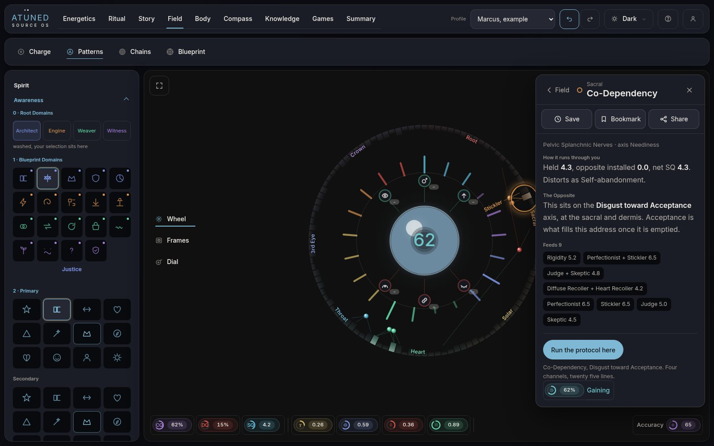</a><figcaption><b>Shelf, desk.</b></figcaption></figure>
<figure><a href="shots/marcus-3-dial-1600.jpg">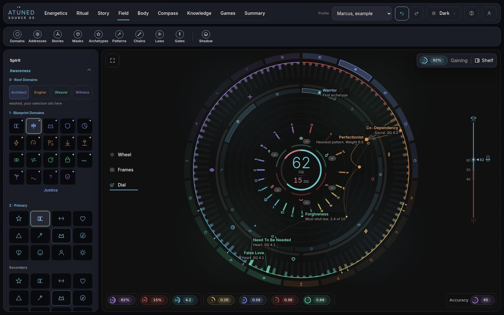</a><figcaption><b>Dial, desk.</b> Words on plates over the marks. Six grey dashes in the collar.</figcaption></figure>
<figure><a href="shots/marcus-2-shelf-390.jpg">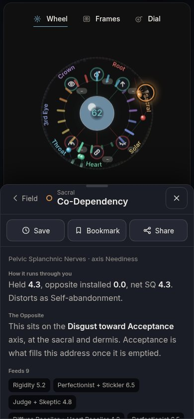</a><figcaption><b>Shelf, phone.</b></figcaption></figure>
<figure><a href="shots/marcus-3-dial-390.jpg">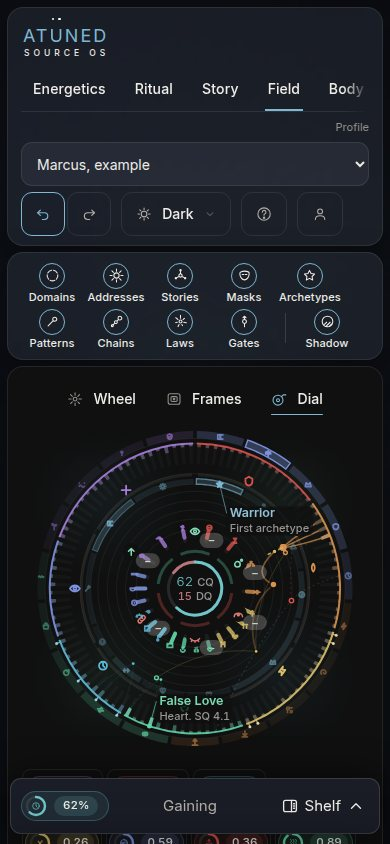</a><figcaption><b>Dial, phone.</b></figcaption></figure>
</div>
<div class="react">
<div class="box"><h3>The shelf<span class="tag t-resist">RESIST</span></h3>
<p class="voice">The move is right. The picture gets the width, one surface answers, a second press swaps instead of stacking. Whoever decided swap over stack knew what they were doing.</p>
<p class="voice">Now the four seconds. The sub line says ‘axis Neediness.’ The next paragraph says ‘the Disgust toward Acceptance axis.’ Two different things, both called axis, on one card. And the nerve is back, first line, small type, stated as a fact.</p>
<p class="rests"><b>Rests on:</b> <code>ui/drills.js</code> prints <code>' · axis '+n.a</code> for the address's own quality and "This sits on the ... axis" for the emotion it belongs to. One word, two concepts, on every address card. The anatomy framing ruling from <code>RESEARCH-icp.md</code> ("a map of seats, the coordinate system") has not reached this line.</p></div>
<div class="box"><h3>The circular Field<span class="tag t-hold">HOLD</span></h3>
<p class="voice">The Dial is the screenshot. It is not a template and it is not a dashboard. Radial bars on a chapter ring is a real idea.</p>
<p class="voice">Two things I would kill. Labels on dark plates sitting on the marks they describe: the Dial's own rule was no word over a mark, and it broke it. And six grey pills with a dash in them in the collar round the centre. On a loaded profile they read nothing. That is decoration wearing the costume of data.</p>
<p class="rests"><b>Rests on:</b> the six gate readouts show "–" on all six ICPs at both widths. CW Q2 asked the owner about the plates and is still open.</p></div>
</div>
</section>

<!-- ======================= ANGELA ======================= -->
<section class="who" id="angela">
<div class="who-hd"><h2>Angela</h2><span class="role">36, seeker, six modalities. ICP.</span></div>
<p class="says">"Everything happens for a reason. I have said that at three funerals and I believed it each time."</p>
<p class="needs">On file: "I expect it to see me." "Will it finally tell me why the same thing keeps happening... None of them told me where it lives." Needed a frame before a result. Walked at the word Incoherent.</p>
<div class="read"><span class="chip">Coherence <b>64</b>, band <b>Gaining</b></span><span class="chip"><b>74</b> holding, none past 4</span><span class="chip">Heaviest <b>Fear</b>, Root, 3.1</span><span class="chip">6 stories</span></div>
<div class="shots">
<figure><a href="shots/angela-3-dial-1600.jpg">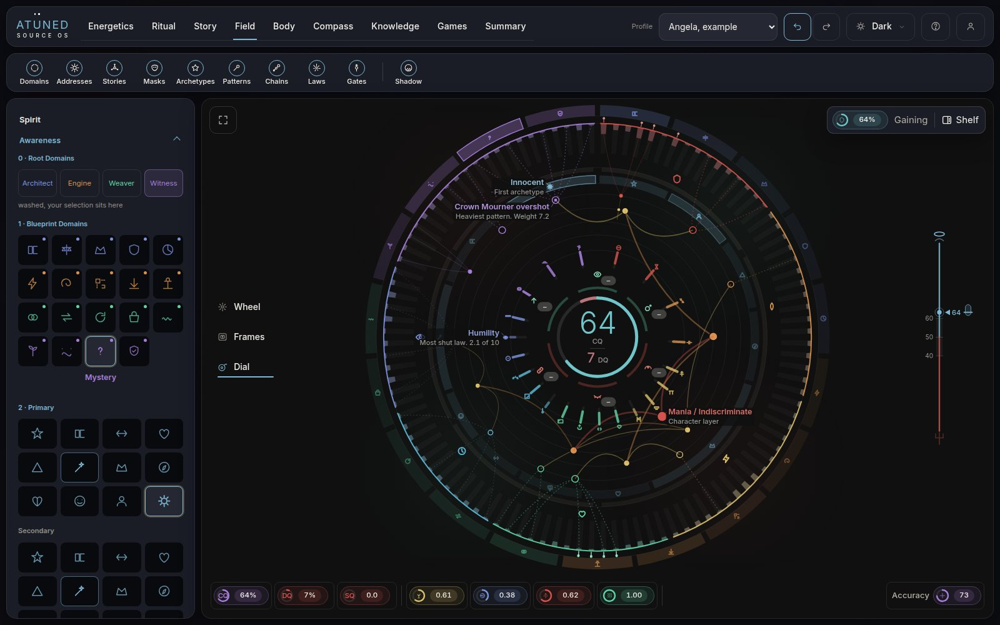</a><figcaption><b>Dial, desk.</b> Innocent, Crown Mourner overshot, Mania / Indiscriminate, Humility 2.1 of 10.</figcaption></figure>
<figure><a href="shots/angela-2-shelf-1600.jpg">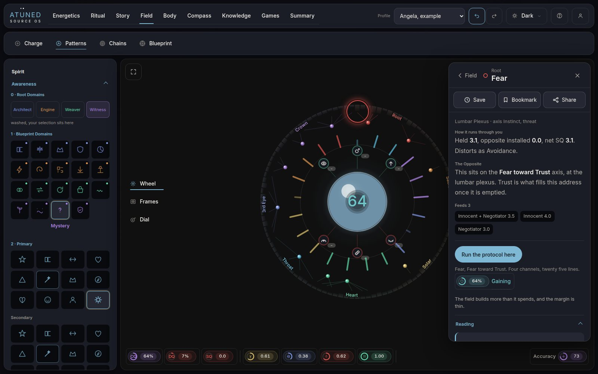</a><figcaption><b>Shelf, desk.</b> Fear, at the lumbar plexus.</figcaption></figure>
<figure><a href="shots/angela-3-dial-390.jpg">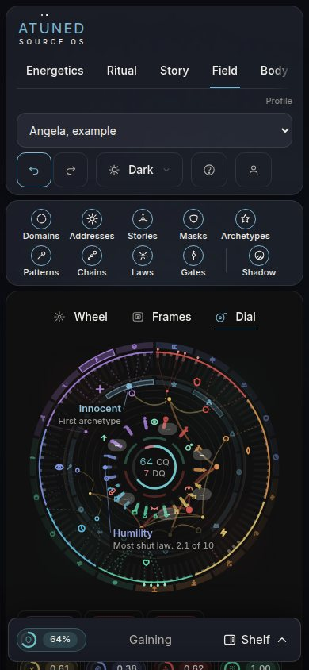</a><figcaption><b>Dial, phone.</b></figcaption></figure>
<figure><a href="shots/angela-2-shelf-390.jpg">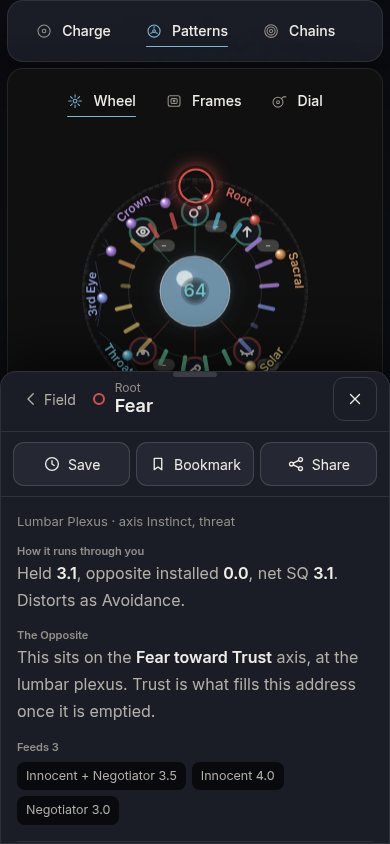</a><figcaption><b>Shelf, phone.</b></figcaption></figure>
</div>
<div class="react">
<div class="box"><h3>The shelf<span class="tag t-confuse">CONFUSE</span></h3>
<p class="voice">‘Fear, lumbar plexus.’ That is where it lives. That is the thing I came for, and it came up the second I touched it.</p>
<p class="voice">Then ‘held 3.1, opposite installed 0.0, net SQ 3.1’ and I am lost. Is 3.1 bad? Then a list of names with numbers. I needed one sentence that says what this is and what to do with it, and the button to do it.</p>
<p class="rests"><b>Rests on:</b> 257 words and 51 numbers on her card. The shelf's own opening line in the item view is the nerve, then three numbers. "SQ" is not explained anywhere on the card, the no shorthand ruling of 25 September.</p></div>
<div class="box"><h3>The circular Field<span class="tag t-buy">BUY</span><span class="tag t-refuse">one line from REFUSE</span></h3>
<p class="voice">This is the one I would screenshot for the group chat. It looks like a mandala and it looks like me. Innocent. Crown. I feel seen by the shape before I read a word.</p>
<p class="voice">Then I read ‘Humility, most shut law, 2.1 of 10.’ And ‘Mania’ in red. So the beautiful thing just told me I have no humility and I am manic.</p>
<p class="rests"><b>Rests on:</b> her Dial names four things at a desk and the last two are a moral virtue scored out of ten and a red clinical word. <code>RESEARCH-icp.md</code> recorded her walking at "Incoherent" for exactly this reason: "a moral adjective delivered by software to a person in crisis is a verdict." The Dial is the most persuasive surface for her and the one most likely to end it.</p></div>
</div>
</section>

<!-- ======================= DEREK ======================= -->
<section class="who" id="derek">
<div class="who-hd"><h2>Derek</h2><span class="role">39, high performer, endurance. ICP.</span></div>
<p class="says">"Pain is information. I have raced on a stress fracture. I would do it again."</p>
<p class="needs">On file: "A limiter. Name the one thing capping my output and where it sits. I will train it like anything else." "Put it in text and I will read it in nine seconds." Does the arithmetic unprompted.</p>
<div class="read"><span class="chip">Coherence <b>49</b>, band <b>Oscillating</b></span><span class="chip"><b>90</b> holding, <b>46</b> past 4</span><span class="chip">Heaviest <b>Manipulation Through Emotion</b>, Sacral, 9.5</span><span class="chip">6 stories</span></div>
<div class="shots">
<figure><a href="shots/derek-2-shelf-1600.jpg">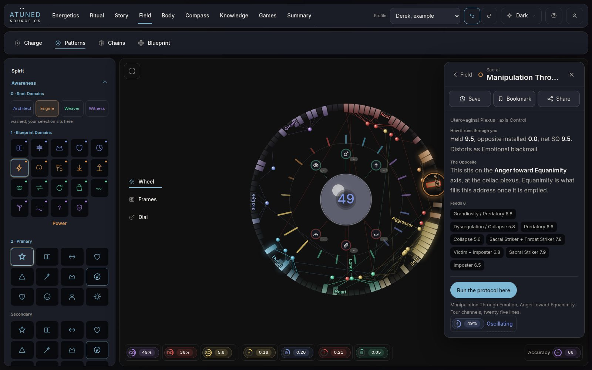</a><figcaption><b>Shelf, desk.</b> First line: Uterovaginal Plexus. Title cut at "Thro...".</figcaption></figure>
<figure><a href="shots/derek-3-dial-1600.jpg">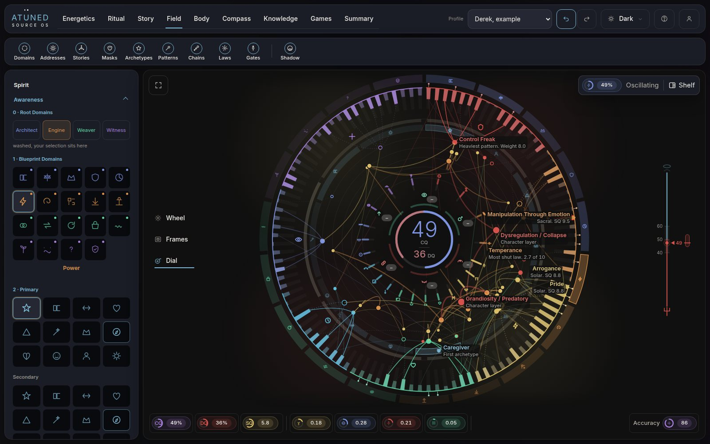</a><figcaption><b>Dial, desk.</b> 25 labels.</figcaption></figure>
<figure><a href="shots/derek-1-wheel-390.jpg">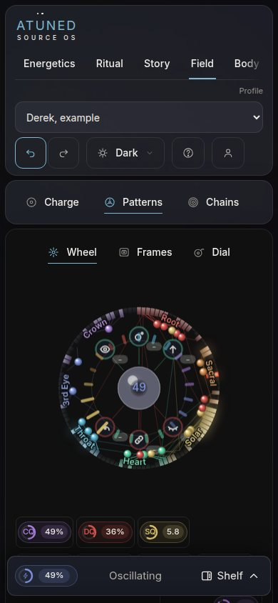</a><figcaption><b>Wheel, phone.</b> His heaviest address could not be pressed. 0% of it answers.</figcaption></figure>
<figure><a href="shots/derek-3-dial-390.jpg">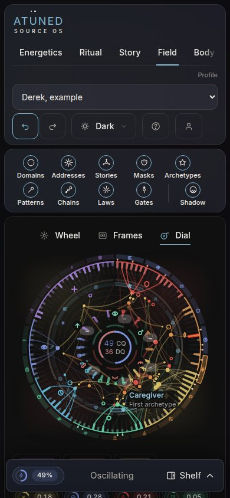</a><figcaption><b>Dial, phone.</b> Names Caregiver, not his limiter.</figcaption></figure>
</div>
<div class="react">
<div class="box"><h3>The shelf<span class="tag t-refuse">REFUSE, recoverable</span></h3>
<p class="voice">One press and it gives me the limiter and where it sits. That is exactly the product I asked for. Held 9.5, feeds eight things, run the protocol here. Nine seconds. Good.</p>
<p class="voice">Where it sits: uterovaginal plexus. I do not have one. If it has my anatomy wrong on the first line, I am not trusting the other 280 words.</p>
<p class="voice">On my phone I could not press it at all. I kept getting Imposter.</p>
<p class="rests"><b>Rests on:</b> <code>engine/data/nodes.js</code> seats address 25 at the Uterovaginal Plexus. The profile schema carries <code>who.sex</code> and the address card never reads it. Derek's persona record carries no sex; his name and the panel's reading of him make the mismatch near certain. Phone reach for this address: 0%.</p></div>
<div class="box"><h3>The circular Field<span class="tag t-hold">HOLD</span></h3>
<p class="voice">The Dial's bars round the ring are a power histogram. I read that instantly. Manipulation Through Emotion, 9.5, named on the ring. That is my limiter where I can see it.</p>
<p class="voice">Then 0.18, 0.28, 0.21, 0.05 along the bottom with no units. Numbers I cannot train against are noise. And on my phone the Dial names Caregiver instead of the thing capping me.</p>
<p class="rests"><b>Rests on:</b> the four dock readouts carry an icon and no word. At 390 the Dial fits two of his names inside the ring, and they are the archetype, not the heaviest address (CW Q1, still open).</p></div>
</div>
</section>

<!-- ======================= JAMES ======================= -->
<section class="who" id="james">
<div class="who-hd"><h2>James</h2><span class="role">57, C-suite, third turnaround. ICP.</span></div>
<p class="says">"I make the call and I sleep fine. People find that cold. It is what they hired."</p>
<p class="needs">On file: "A ranking against people like me." "Front load the finding." Refused at the join between a questionnaire and a body: "Those are not the same object and you moved between them without telling me."</p>
<div class="read"><span class="chip">Coherence <b>44</b>, band <b>Oscillating</b></span><span class="chip"><b>90</b> holding, <b>37</b> past 4</span><span class="chip">Heaviest <b>Escapism</b>, Root, 9.3</span><span class="chip">5 stories</span></div>
<div class="shots">
<figure><a href="shots/james-2-shelf-1600.jpg">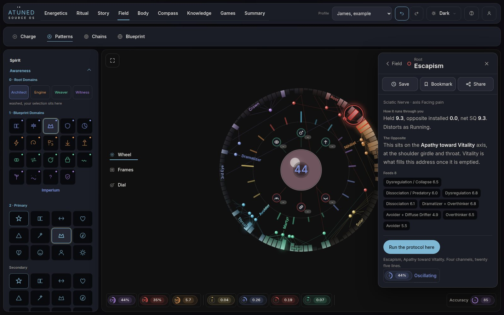</a><figcaption><b>Shelf, desk.</b></figcaption></figure>
<figure><a href="shots/james-3-dial-1600.jpg">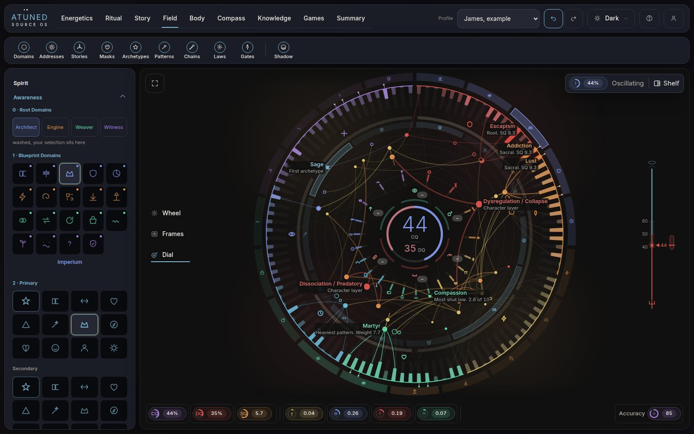</a><figcaption><b>Dial, desk.</b> Escapism, Addiction, Lust, in the Dial's largest label type.</figcaption></figure>
<figure><a href="shots/james-2-shelf-390.jpg">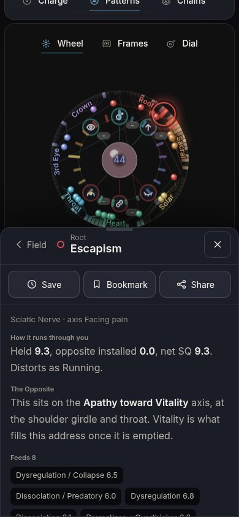</a><figcaption><b>Shelf, phone.</b></figcaption></figure>
<figure><a href="shots/james-4-dialpress-390.jpg">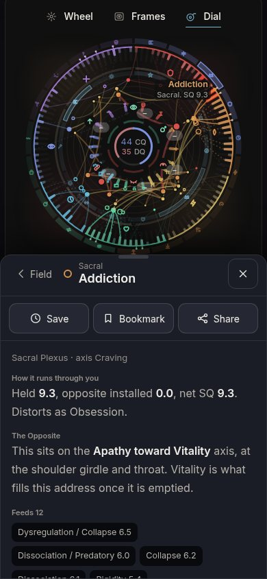</a><figcaption><b>Dial, phone, pressed.</b> Aimed at Escapism, opened Addiction.</figcaption></figure>
</div>
<div class="react">
<div class="box"><h3>The shelf<span class="tag t-hold">HOLD</span></h3>
<p class="voice">It front loads. The name at the top, the number under it, the action at the bottom. That is a board paper and I respect it.</p>
<p class="voice">It does not tell me where 9.3 sits against anyone else, and I know you have decided not to. Fine. Then tell me where it sits against me last month. Save does that. Lead with it.</p>
<p class="voice">It says sciatic nerve and then shoulder girdle and throat. You are moving between two objects without telling me, again.</p>
<p class="rests"><b>Rests on:</b> his card names the Sciatic Nerve for the address and "the shoulder girdle and throat" for its emotion's axis. The no comparison ruling stands in <code>RESEARCH-icp.md</code> section 3.</p></div>
<div class="box"><h3>The circular Field<span class="tag t-resist">RESIST</span></h3>
<p class="voice">The Dial prints Lust and Addiction in the biggest type on the screen. I will not open that on a plane, or in my office with the door open.</p>
<p class="voice">The Wheel I can live with. It shows weight, not words. And Wheel, Frames, Dial: three buttons for the same reading is two too many for me.</p>
<p class="rests"><b>Rests on:</b> the Dial's callouts are the heaviest addresses' names, and on James all three at 9.3 are the most private words the product carries. The Wheel names seats, not addresses, on the picture. The owner asked the same Wheel, Frames, Dial question himself in DB.</p></div>
</div>
</section>

<h2>Found in passing, measured, and not a matter of taste</h2>
<div class="wrap"><table>
<tr><th>Defect</th><th>Cause</th><th>Who it costs</th><th>The move</th></tr>
<tr><td><b>The address card names two places.</b> James: Sciatic Nerve, then "shoulder girdle and throat." Sofia: Sacral Outflow, then the same. Derek: Uterovaginal Plexus, then "celiac plexus." 3 of 6 heaviest cards.</td><td><code>ui/drills.js</code> line 252 prints the emotion axis's own seat, <code>c.addr</code>, in a sentence that reads as the address's seat.</td><td>Marcus, James, Sofia</td><td>Drop "at the ..." from the opposite line, or say "the axis runs through ...". A product about where must say where once.</td></tr>
<tr><td><b>"Axis" means two things on one card.</b></td><td>The sub line prints the address's quality as "axis"; the next section names the emotion axis.</td><td>Marcus</td><td>One word per concept. The sub line's word is not axis.</td></tr>
<tr><td><b>Sex specific anatomy, sex never read.</b></td><td>Address 25 seats at the Uterovaginal Plexus; <code>who.sex</code> exists in the schema and no drill reads it.</td><td>Derek, and every man holding that address</td><td>Owner's call, below.</td></tr>
<tr><td><b>The Dial prints "SQ"</b> ("Solar. SQ 6.7") and a law "2.9 of 10".</td><td><code>ui/rings.js</code> lines 909 and 917. CE rewrote "SQ" to "Held at" in mockups only; the shipped Dial kept it.</td><td>Angela, Sofia, Derek</td><td>"Held at 6.7". The law callout names the law and drops the score.</td></tr>
<tr><td><b>Share still says coach.</b></td><td>Built in DA before DB widened it to any practitioner, who can also request.</td><td>Sofia</td><td>"Share" pane names a practitioner, and gets a practitioner side.</td></tr>
<tr><td><b>Expand does not enlarge the Wheel.</b></td><td>The Wheel is bound by height. The stage goes from 1,268 to 1,580 wide and, read off the two DA captures, the Wheel stays about 520 across and only moves left.</td><td>The owner's own "use the entire screen as the visual"</td><td>Measure it before promising it. It clears clutter; it does not give the picture more size.</td></tr>
</table></div>

<h2>What I need from him</h2>
<div class="q">
<p><b>1. On a phone, what does a tap on a crowded spot do?</b> Today it opens whatever is drawn on top, usually a pattern, and Derek's heaviest address cannot be reached at all.</p>
<p><b>Either way.</b> A tap opens the shelf on a short list of everything under the finger, heaviest first: always right, one extra tap. Or the address always wins over the pattern on a phone: one tap, but patterns then have to be reached from the list in the shelf.</p>
<div class="shots"><figure><a href="shots/derek-1-wheel-390.jpg"></a><figcaption>Derek, 390. His 9.5 sits under the Imposter bead, Sacral, right side.</figcaption></figure></div>
</div>
<div class="q">
<p><b>2. Should the Dial print the heaviest addresses' names on the picture?</b> James: "I will not open that on a plane."</p>
<p><b>Either way.</b> Keep the names: the Dial stays the view that names things, and the most private words sit in the largest type. Or show the seat and the weight on the picture, and the name only in the shelf when pressed: private at a glance, one press to read.</p>
<div class="shots"><figure><a href="shots/james-3-dial-1600.jpg"></a><figcaption>James, 1600. Escapism, Addiction, Lust on the ring.</figcaption></figure></div>
</div>
<div class="q">
<p><b>3. Should a sex specific address follow the person's sex?</b> The profile records sex at birth. Nothing uses it. Derek is shown a uterovaginal plexus.</p>
<p><b>Either way.</b> The card reads the profile and names the matching structure where one exists: correct for the person, and the codex gets a second seat for some addresses (<code>BOOK-ERRATA.md</code> territory). Or the seat is renamed to a structure everybody has: one map for everybody, and the codex moves.</p>
</div>
<div class="q">
<p><b>4. The Dial's callout for a law prints "Humility, most shut law, 2.1 of 10."</b> Angela walked once already at a moral word with a score. Name the law and drop the score, or keep the score and drop the words "most shut"?</p>
<div class="shots"><figure><a href="shots/angela-3-dial-1600.jpg"></a><figcaption>Angela, 1600. Left of centre.</figcaption></figure></div>
</div>

<h2>How this was made</h2>
<p><code>shoot.js</code> opens <code>proto/shelf/shelf.html</code> (read only) with no persona, loads each ICP from <code>atuned_src/engine/data/people.js</code>, commits their own lines from <code>sim/stories.js</code> the same way the shelf's own build commits James's, and presses their heaviest address with a real click or tap: on the Wheel, then on the Dial. It writes every capture and <code>shots/facts.json</code>, which carries each card's text, its word and number count, and whether the ring came on. <code>reach.js</code> samples a 17 by 17 grid over each ICP's four heaviest addresses and asks the product's own hit test what answers; it was checked first on an address with nothing over it, which reads 71%, the ceiling. The ages and roles are the ones on file in <code>people.js</code>. The needs quoted are from <code>RESEARCH-icp.md</code>. The reactions are simulated.</p>
<p><code>NODE_PATH=/opt/node22/lib/node_modules node proto/icp-review/shoot.js</code><br><code>NODE_PATH=/opt/node22/lib/node_modules node proto/icp-review/reach.js</code></p>
</main>
